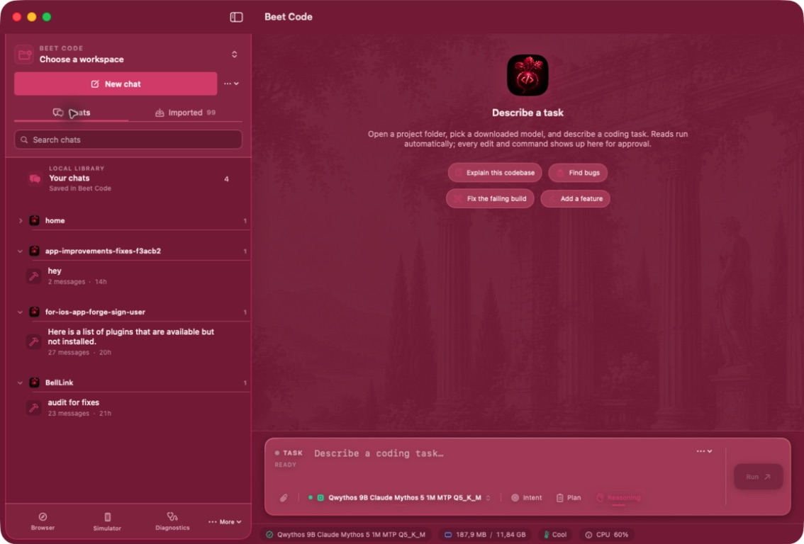
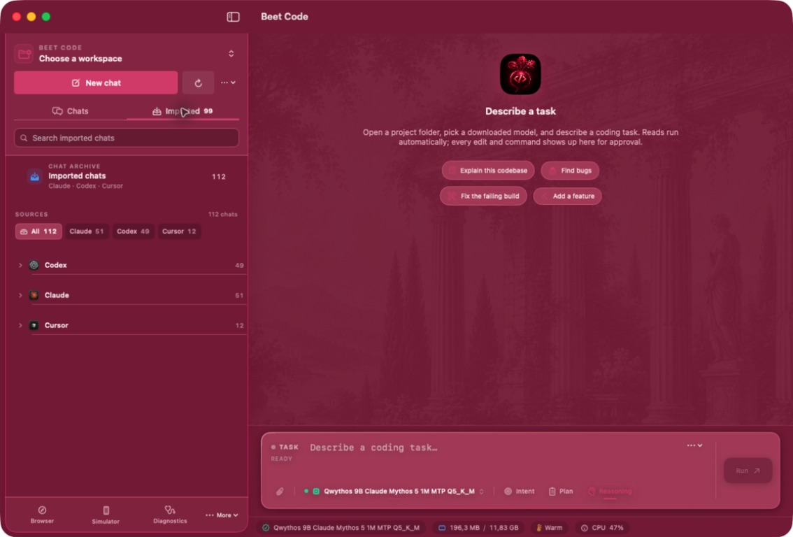
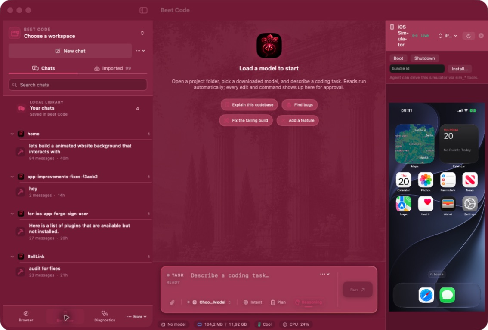
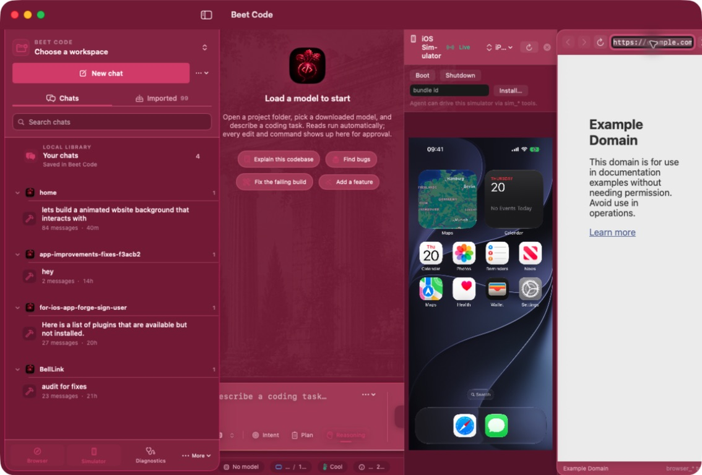
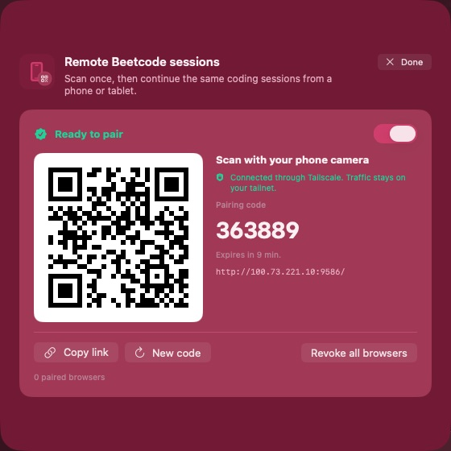

Models on your Mac
Run MLX models in-process on Apple Silicon, or switch to a BYOK provider when the task calls for it.
Beet Code puts local models, safe tools, imported chat history, browser control, and an iOS Simulator beside your code — in one calm workspace.

Everything important stays visible, reviewable, and close to the task. Beet Code is designed to feel like a focused desktop tool, not a dashboard.
Run MLX models in-process on Apple Silicon, or switch to a BYOK provider when the task calls for it.
Reads are quick. Edits, shell commands, and other mutations come through clear approval cards and checkpoints.
Drive the in-app browser and iOS Simulator without leaving the conversation or losing the thread.
A few of the surfaces that make Beet Code feel like one coherent coding desk.

Bring in Claude, Codex, and Cursor histories, grouped by source and collapsed by default.

Boot a device, install an app, and keep a live screen next to the agent workspace.

Navigate and inspect web surfaces from a docked browser panel built for agent workflows.

Continue a saved coding session from a phone or tablet with a short-lived pairing code.
The short version for deciding whether Beet Code fits your setup.
| Platform | Apple Silicon Mac running macOS 15 or newer |
|---|---|
| App | Native Swift 6 + SwiftUI desktop application |
| Inference | MLX in-process, GGUF / llama.cpp, or BYOK remote providers |
| Tools | Files, shell, git checkpoints, browser, iOS Simulator, diagnostics, MCP |
| Themes | Light, dark, and Beet Red appearance with system-aware contrast |
| License | Open source — see the repository license and contribution guide |
Open a project, choose a model, and describe what needs to change. The agent keeps the work visible from first read to final verification.
Get Beet CodeRead the architecture, security boundaries, benchmarks, and acceptance notes in the repo before you commit to a workflow.